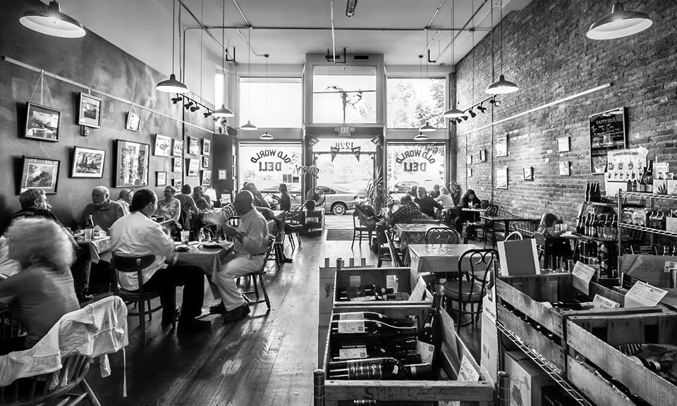

Intro
Born and raised on a little island called Sri Lanka. I've spent 20 years of my life there but I decided to pursue a post secondary education as there is more to learn everyday in our life. I had the privilege to use a computer when I was young, eventhough it was used to play video games I was fascinated by it. I decided to pursue something related to computers, learning about hardware was fascinating but it was not my strong suit so I decided upon the software side of it.
I decided to move abroad as it offers different perspectives and planned my move to Canada. After planning where to go I decided to apply for a university in Ottawa and I got accepted to Carleton University to follow a bachelors in Computer Science.
By the way, check out my awesome school projects.
School Projects
Real-Time Packet Loss Simulator (Packet Sniffer)
- Designed and implemented a simulator to interrupt server and client communication to test the efficiency of UDP.
- Implemented the system in Java using a UDP datagram socket to initiate connections between the clients.
- Created documentations and test cases using JUnit following the TDD development process.
- Tools: Java, Linux, Slack and Git
Multiplayer "Ivanhoe" board game
- Collaboratively developed a multiplayer Implementation of the Board Game Ivanhoe
- Wrote Use Cases, User Stories, Test Cases, Test Plans with respect to scenario modelling, and then used the documentation to generate test cases and test plan documents using JUnit 4.0
- Formed a network connection to play the game online and achieved detailed documentation on the implementation and features of the game.
- Tools: Java, Unit Testing, Linux, Git
Student Assignment Submission System
- Developed and tested a Web Application for submitting student assignments (Cucumber, Junit, Selenium)
- Implemented and tested different scenarios of the main feature (login and uploading projects) on the website.
- Tools: JavaScript, HTML5, CSS, Selenium
Contact Entry System
- Worked towards creating a contact info database for new members joining the catholic group for easy access and modification of data.
- Planned and designed a windows forms application through C# with link to a SQL database with contact information of members to the catholic group.
- Tools: C#, Visual Basic, SQL Server
Entrepreneurship Challenge
- Collaboratively developed a shopping cart application for the Online Venture Challenge for the Sprott School of Business.
- Planned and devised a prototype Android app to present our shopping cart application (ShopEZ) to better represent our goal in achieving a working Android app.
- Tools: Java, HTML5, React
Work experience

Deli Clerk and General Help
Ross’s Independent Grocer
09/2018 – Present
- Achieved courteous and efficient approach to act on customer requests, questions and complaints.
- Increased customer satisfaction at the deli, while ensuring that store displays, products and services comply with company standards.
- Oversaw food safety and hygiene measures to ensure work areas are ready to service customers.
- Worked with Deli Manager in invoicing, overstock and manual product orders.
Volunteer Work
Technical Support
- CRL (Church of the Risen Lord) Sri Lanka in Ottawa.
- Assisted in setting up computer systems to join faith groups in Sri Lanka to Sri Lankan Canadians.
- Assisted in handling the database of followers in the Ottawa church group.
Route Marshall
EPIC WALK for Women’s Cancer
- Coordinate with others on a team to guide and instruct volunteers walking for the cause.
- Worked with marshal coordinator to avoid possible hazards along the route.
Capital Velo Fest
- Coordinate with others on a team to guide and instruct riders inspiring people to bike more often.
- Worked with marshal coordinator to avoid possible hazards along the route.
- Worked with marshal coordinator to guide road traffic to take a detour to avoid bike riders path.
Chess Tournament Volunteer
- Assist Chess players in a tournament to have a friendly game environment.
- Worked with game coordinator to keep track of player game records and ensure players follow rules.
Education
British School in Colombo
IGCSE A-Levels
Carleton University in Ottawa
Computer Science Major (BCS) (2013 - 2018)
Personal Skills

- Self-motivated and outstanding problem solving and logical thinkings skills
- Excellent attention to detail
- Exceptional communication and writing skills
- Educated and skilled with various software algorithms and data structures.
- Fast learner who can work under pressure and manage multiple tasks and initiate strategically.
Technical Skills
Languages
Proficient in Java, C, C++
Some experience with C#, JavaScript, React
Working knowledge of MFC, HTML5, CSS
Development Environments
Eclipse, Dr Racket, Android Studio, R Studio, Visual Studio Code
Database Management
SQLite, MongoDB, SQL
Source Control Systems
GIT, BitBucket
Contact Info
Niresh Wewala
Nepean, ON,
Canada.
Email: njc.wewala@gmail.com
Mobile: 613-700-0732